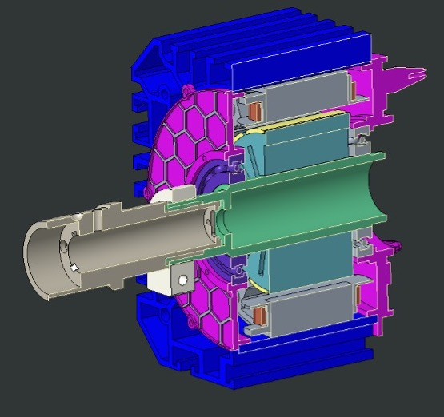
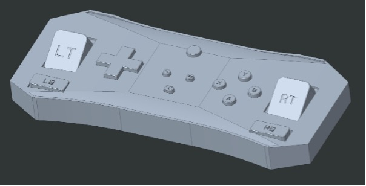
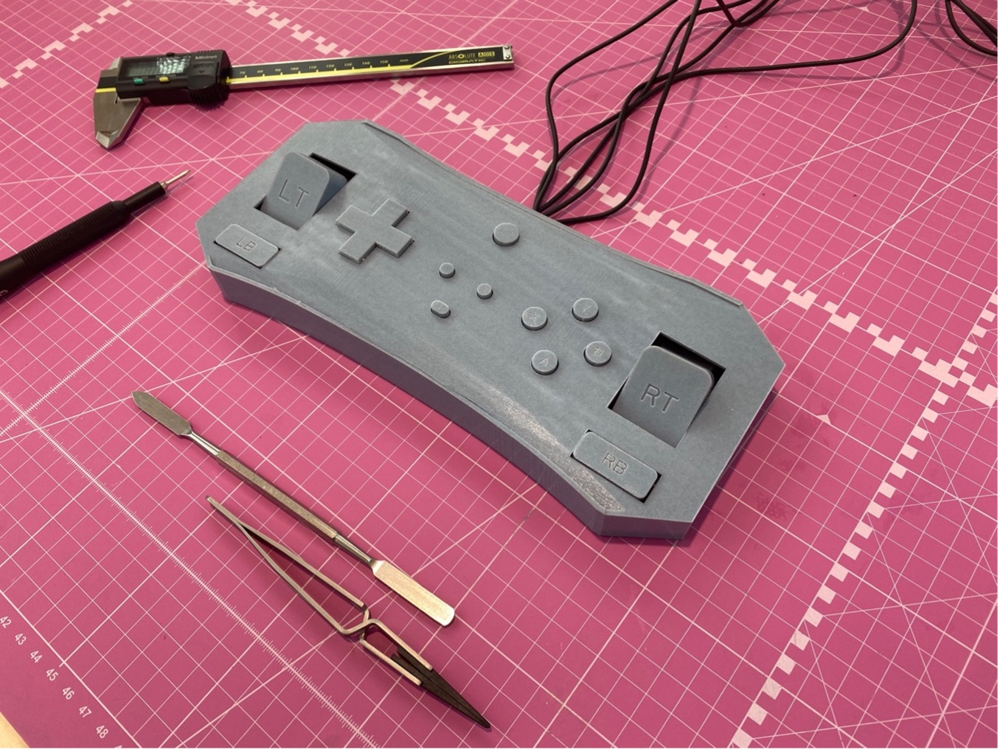
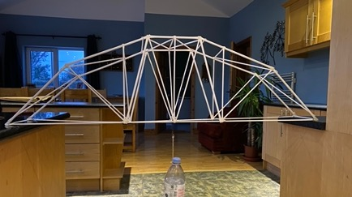

Projects
Fanatec CSL-DD
 When I was working at Logitech, we recognized the need to perform Finite Element Analysis (FEA) on the Fanatec CSL-DD wheelbase, a product from one of our key competitors in the gaming peripherals industry. This was a crucial task as it allowed us to gain insights into the performance and structural integrity of their product. The first step was to collect comprehensive technical specifications and measurements for the Fanatec CSL-DD. This data included details about its physical dimensions, materials used, and specifics about its various components, such as the motor, housing, and mounting points. To model the Fanatec CSL-DD, I divided it into individual parts and subassemblies. This meant creating separate CAD models for components such as the motor, housing, wheel attachment mechanism, and the force feedback system. All these components were then assembled together to form the complete wheelbase. It was important to define the material properties for each component in the model. In preparation for FEA, I had to mesh the 3D model. This involves dividing the geometry into smaller elements, such as triangles or quadrilaterals, which FEA software uses to calculate stress and deformation. The quality of the mesh is essential for the accuracy of FEA results. I specified the loads and boundary conditions that the wheelbase might encounter during typical usage. This included forces applied to the steering wheel, vibrations, and dynamic forces during turning and acceleration. This information was crucial for benchmarking against their designs and potentially identifying areas for improvement in our own products, all while respecting legal and ethical boundaries.
Big Life Fix
In early December, I was approached with an intriguing project. Logitech had become involved in a heartwarming RTE show called "The Big Life Fix." This show is dedicated to assisting children with disabilities by pairing them with various engineering experts who collaborate to design custom systems or products to improve the child's quality of life. In this instance, Logitech had committed to assisting Daire, an 8-year-old boy born without arms, who was passionate about playing FIFA on his Xbox. Remarkably, he had mastered the use of the Xbox controller with his feet. My manager asked me if I would be interested in the challenging task of designing a modified Xbox controller that would function just like the original but be tailored to accommodate Daire's unique needs comfortably. I felt an immense sense of responsibility, and I deeply appreciated the trust my manager had placed in me for this vital project. It presented a rare opportunity for creative problem-solving.
To tackle this endeavor effectively, I knew I had to begin by meticulously identifying the key challenges associated with playing Xbox with one's feet. I recognized the importance of documenting these challenges on paper and ensuring they remained at the forefront of the design process, preventing them from being overshadowed by aesthetic considerations or overlooked in any way.
Daire's primary challenge was accessing the LT/RT and LB/RB buttons on the controller, as they were positioned perpendicular to the rest of the buttons. Solving this particular issue became the focal point of my design efforts. Additionally, I decided to increase the diameter and depth of the other buttons to enhance Daire's ability to press them with his feet. Throughout this process, my project supervisor and I collaborated closely to create the most comfortable and user-friendly gaming setup for Daire. The RTE team even joined us to film the prototyping process, with the show airing in mid-March of 2023.
This project provided me with a remarkable opportunity to apply my problem-solving skills to benefit others. It was an incredibly rewarding experience that will leave a lasting impression on me. I am immensely thankful for the trust and support my manager extended to me, allowing me to contribute to such a meaningful endeavor.
Paper Straw Truss
 In first year the college presented us with a challenging concept, designing and constructing a 3D truss structure that spanned 1 meter and could hold a 1kg weight at its centre. After a thorough analysis, our group chose this design due to its combination of strength and lightweight properties, making it the optimal choice for construction.
To ensure the structural integrity of our creation, I embarked on the task of making a Maxwell force diagram. This laid the foundation for a comprehensive table that meticulously outlined the forces at play for each individual member. This meticulous approach provided us with a unique opportunity to scrutinize the straw's strength data we were provided with. Our primary focus was on the compression members, the heart of our concerns. We meticulously identified and analyzed the largest forces, carefully cross-referencing them with our data. This rigorous analysis allowed us to confidently conclude that all tension members could safely utilize 4mm straws, given their impressive tensile strength, well beyond our actual requirements. In the case of the compressive members, it was unanimously decided that 6mm straws were the ideal choice. The truss demanded this extra strength to guarantee structural stability and longevity. This analysis and thoughtful adjustments were repeated for each member, culminating in the final, perfected design.
Throughout this assignment, I gained a profound appreciation for the intricate world of design. It unveiled the fascinating complexity and the unwavering attention to detail that is essential when crafting a secure structure. Every conceivable scenario had to be meticulously considered and accounted for. Material strength had to be maximized to optimize cost-efficiency while simultaneously ensuring statistical safety for continuous, long-term use. In essence, this experience opened my eyes to the multifaceted nature of design, highlighting its allure and its formidable challenges. I have come to recognize that, in the realm of engineering, success hinges on the fusion of creativity, precision, and an unwavering commitment to safety and quality.
Skills
Mechanical Design
- CAD - Creo parametric + SolidWorks
- FEA - Ansys + Abaqus
- 3D printing
- Geometric Dimensioning and Tolerancing
- Rapid prototyping
Software
- Python
- Java
- Basic HTML and CSS
- Minitab
- MATLAB